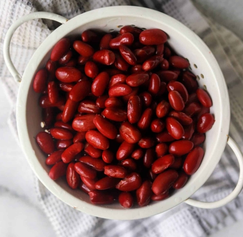
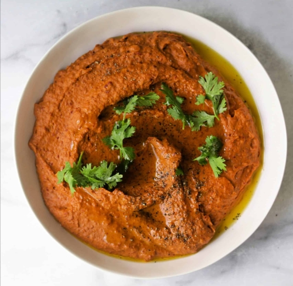

Рецепт за љути(чили) хумус
Састојци:
- Тамно црвени пасуљ.Ово ће бити основа вашег хумуса, уместо традиционалних нут/сланих грашића.
- Лук, халапењо, бели лук.Ова три пријатеља ће пружити много укуса. Чак и одем на следећи ниво и динстам их у маслиновом уљу да постану дубљи и богатији у укусу.
- Концентрат домаћег парадајза.Уместо тахинија, користимо концентрат домаћег парадајза да бисмо убрзали текстуру и дубину чили хумуса.
- Жестоки домаћи парадајзов сок.Ово је као тајни састојак.
- Чилији у праху, кумин, димљена паприка. Потребни су вам ова три зачина у кући из многих разлога.
- Маслиново уље.Као у традиционалном хумусу, маслиново уље спаја све заједно.
- Лимунов сок.Киселина! Потребно је у скоро сваком рецепту.
- Коријандер, чедар сир, црне маслинке. Ово су додаци за хумус.
- Чипс од тортиље.За умак, брате!

Инструкције, корак по корак:
- Први корак је да исечете лук, халапењо и бели лук.
- Загрејте тигањ на средњу температуру са једном кашиком маслиновог уља у њему.
- Додајте исецкани лук и халапењо и динстајте 5-7 минута или до меканости.
- Умешајте бели лук и кувајте до мириса, око 30-60 секунди (немојте да га пржите!).
- Преферирајте ову смесу у чинију процесора за храну.
- Додајте исцедјени кидни грашак, сок од парадајза, концентрат парадајза, кору и сок лимуна, чилији у праху, кумин, димљену паприку, сол и црни бибер.
- Пулсирајте док се не сједини, затим постепено додавајте остатак маслиновог уља док процесујете дип.
- Зауставите да зачепите стране чиније да бисте били сигурни да су сви парчићи укључени у дип. Обратите пажњу да буде лепкаво и кремасто!
- Пробајте га и прилагодите зачине ако је потребно. Понекад му је потребно више лимуновог сока или соли.
- Намажите чили хумус у чинију за сервирање и додајте коријандер, чедар сир и црне маслинке на врх.

Начин сервирања
- Као умак: Волим да послужим чили хумус са мало мексичких сирева, црним маслинама и исецканим парадајзом поред гомиле чипса од кукурузних тортиља за умакање. Као пасуљ умак.
- То је један од оних рецепата који нестају у трен ока на забави.
- Такође волим да га послужим као снек током недеље (мора да се држе ствари зачињеним!).
- Као намаз: Такође је диван намаз за бурито са чоризом, црним пасуљем, јајима и сиром.
- Или за било који бурито, такос, енчилада, тостада или слично.
- Видите где ово води.